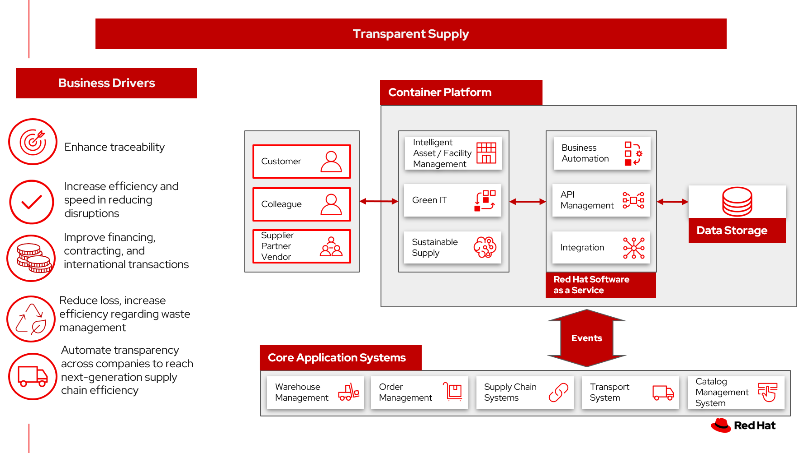

Product lifecycle management
Waste and water management are among the high priority items that are part of environmental sustainability goals.
Visibility of an organization's assets and associated material components and gain insights into its global waste profile, the company can better engage the waste management team, supply chain team, equipment manufacturers and waste haulers.
By using this cradle-to-grave method allows the company to integrate with environmental reporting processes and incentivize sustainability improvement across the organization.
Use cases
Organizations want to enhance the tracking of assets and associated material components across the enterprise. Through improved visibility into job activities and an asset's lifecycle, the organization can better understand and drive change using data-driven insights.
Background
As outlined in a Pennsylvania State University study, "Hazardous Waste is any Waste that has been designated, characterized or otherwise regulated as hazardous by applicable laws or regulations in a country, state, region, or locality. Examples can include a corrosive liquid or a flammable solvent.
"Product End of Life Management (PELM) refers to the demanufacturing, dismantling, reuse, reclamation, recycling, shredding, treatment and / or disposal of end-of-life (EOL) IT equipment and parts."
Business problem
The business problem consists of two major parts:
- First is the management (collection, transportation, recycling treatment or disposal) of hazardous and nonhazardous special waste that comes from internal operations (e.g., facility operations, on-site waste water treatment, research, manufacturing processes, and environmental remediation programs). Such byproducts are reduced and recycle when possible, followed by treatment and disposal (incinerated and/or sent to landfills).
- Second are products or their parts and components that have reached their intended end of life (a.k.a PELM). These materials may be generated from your own operations or by your clients. These PELM materials may still have value and can be refurbished and resold or, may be disassembled and their parts harvested for reuse or scrapped.
The output of the scrapping process may involve recoverable materials (e.g., ferrous and non-ferrous metals, precious metals, glass, plastics, etc.) that have intrinsic value and are sold in secondary commodity markets, or waste materials (e.g., non-recyclable packaging material, non-recyclable plastics, shredder fluff, etc.) that have no value and require proper treatment or disposal.
Waste materials may be considered hazardous or nonhazardous depending on government designation.
Often the disposal of hazardous wastes are contracted through third parties.
Challenges / Business Drivers
Challenges
- Waste management team manually gathers disposal data from individual haulers for each facility in the organization.
- Manual data collection method limits internal data validation to sporadic certification spot-checks.
- No real-time visibility into hazardous waste lifecycles or raw materials to actively engage with vendors and ensure hazardous waste compliance and forecasting
- Field teams manage the end-to-end lifecycle and disposal process in spreadsheets
- The recycling process is manually managed by external regional haulers
Business drivers
- Meeting strict compliance with regional hazardous waste management standards
- Setting and meeting environmental waste targets
- Streamline replacement work order management and asset tracking process
- Tracability and controls of waste disposal
- Advise on automation replacement work-orders to engage with waster haulers for reconcilation
- Streamline collection, tracking and reporting of hazardout materials
- Monitor and forecast waste targets
Business outcomes
- Improved management of regulatory compliance and third-party audit certification.
- Enhanced monitoring by tracking against zero waste targets and diversion rate per location.
- Enhanced visibility of entire lifecycle from consumption to responsible disposal and recycling.
- Improved visibility, monitoring and management of assets and consumables including hazardous and non-hazardous waste.
- Gaining both global view and site level view of consolidated environmental sensitive cradle-to-grave equipment and parts.
Solution overview
The solution shown in Figure 1 uses components that can be grouped into three main categories as shown in the following diagram:
- Core application systems. Often customer-provided technologies, such as order management, facilities management. These systems can be stand-alone applications, on premises and cloud services, databases.
- Foundational infrastructure. The Red Hat/IBM solution is built on Red Hat OpenShift. Data is routed through API management. Events are routed through Business Automation tools such as Business Automation Workshop.
- Sustainable enterprise systems acts to coordinate facilities management with workplace management backed by sustainability reporting.

Figure 1. Overall view of sustainable facilities solution.
The sustainable enterprise works within the existing enterprise infrastructure.

Figure 2. Sustainable enterprise works within existing digital infrastructure.
Logical diagrams

Figure 3. The personas and technologies that provide a platform for some of the biggest potential breakthroughs in the supply chain.
Architecture
The figures in this section show the interaction of suppliers' data to your customer systems.
Waste management lifecycle
In this figure, suppliers' provides data for decision making to drive efficiencies in waste management.

Figure 4. Schematic diagram of the waste management use case.
Sustainable supply workflow steps:
Action Guide
From a high-level perspective, the Action Guide represents a future state for organizations considering a comprehensive commitment. The idea is to outline a set steps that can be prioritized to reach that future state by adding new functionality to your existing systems.
- Automation
- Sustainability
- Modernization
| Actionable Step | Implementation details | |
|---|---|---|
| Automation | Automate the collection of sustainability data | Reduce manual processing of data |
| Automation | Amp up AI to make workflows smarter | Participants add their data and supporting documents like certifications to the ledger and control who is allowed to see what. Once added to the ledger, data cannot be manipulated, changed or deleted. Participants can track materials and products from source to end customer and, ultimately, the consumer. |
| Sustainability | Include sustainability data in decision making | Integrate sustainability metrics in supply chain, facility management, and data center operations |
| Sustainability | Track sustainability data within your supply chain | Engage vendors and partners to provide sustainability data as part of your purchasing requirements |
| Modernization | Modernization for modern infrastructures, scale hybrid cloud platforms | The decision for a future, Kubernetes-based enterprise platform is defining the standards for development, deployment and operations tools and processes for years to come and thus represents a foundational decision point. |
| Modernization | Modernize application deployment and operations practices | Include DevOps best practices to deploy, monitor, and maintain applications |
For specific steps on this approach, see The Action Guide details in Own Your Transformation survey of 1500 CSCOs across 24 industries.
Technology
The following technologies offered by Red Hat and IBM can augment the solutions already in place in your organization.
Core systems
Red Hat OpenShift Kubernetes offering, the hybrid platform offering allow deployment across data centers, private and public clouds offering choices and flexible for hosting system and services. You can manage clusters and applications from a single console, with built-in security policies with Red Hat Advanced Cluster Management and Red Hat Advanced Cluster Security.
Red Hat Ansible Automation Platform operate, scale and delegate automate IT services, track changes an update inventory, prevent configuration drift and integrated with ITSM.
Red Hat OpenShift DevOps represents an approach to culture, automation and platform design intended to deliver increased business value and responsiveness through rapid, high-quality service delivery. DevOps means linking legacy apps with newer cloud-native apps and infrastructure. A DevOps developer can link legacy apps with newer cloud-native apps and infrastructure.
Integration services
Red Hat OpenShift API Management is a managed API traffic control and program management service to secure, manage, and monitor APIs at every stage of the development lifecycle.
Red Hat Intgration is a comprehensive set of integration and messaging technologies to connect applications and data across hybrid infrastructures. It is an agile, distributed, containerized, and API-centric solution. It provides service composition and orchestration, application connectivity and data transformation, real-time message streaming, change data capture, and API management.
IBM Business Automation delivers intelligent automations quickly with low-code tooling, such as business processes automation, decisioning software, robotic process automation, process mining, workflow automation, business process mapping, Watson Orchestrate, content services, and document processing.
IBM Data Fabric empowers your teams and works across the ecosystem by connecyting data from disparate data sources in multicloud envrionments. In particular, Watson Knowledge Catalog provides you users with a catalog tool for intelligent, self-service discovery of data, models. Watson Query provides data consumers with a universal query engine that executes distributed and virtualized queries across databases, data warehouses, data lakes, and streaming data without additional manual changes, data movement or replication.
Sustainable enterprise sub-system
Envizi simplifies the capture, consolidation, management, analysis and reporting of your environmental, social and governance (ESG) data.
IBM TRIRIGA harnesses the power of data and AI to infuse sustainability into your real estate and facilities management operations.
IBM Maximo Application Suite (MAS) Infuse sustainability into your asset management by harnessing the power of data and AI.
IBM Turbonomic monitors resource consumption of applications within the data center. It provides FinOps engineering teams the ability to ensure your applications are performing efficiently, allowing cloud and ITOps teams to cut cloud spend and multiply ROI.
Transparent Supply provides supply chain management with a robust traceability solution.
References
- IBM Announces 21 Environmental Sustainability Goals
- Pennsylvania State University Selecting and Evaluating Environmentally Responsible Suppliers of Hazardous, Nonhazardous Special Waste and Product End-Of-Life Management Services
Contributors
- Iain Boyle, Chief Architect, Red Hat
- Mahesh Dodani, Principal Industry Engineer, IBM Technology
- Thalia Hooker, Senior Principal Specialist Solution Architect, Red Hat
- Lee Carbonell, Senior Solution Architect & Master Inventor, IBM
- Eric Singsaas, Account Technical Lead, IBM Technology
- Mike Lee, Principal Integration Technical Specialist, IBM
- Rajeev Shrivastava, Account Technical Lead, IBM
- Bruce Kyle, Sr Solution Architect, IBM Client Engineering